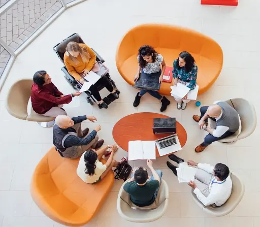

Serving our community since 2001
Wellspring Community Center is a 501(c)(3) charitable, cultural, and educational non-profit organization dedicated to promoting peace, harmony, dialogue, and friendship in diverse cultural settings across Connecticut.
A vibrant hub for more than two decades
For over two decades, our center has been a hub for community activities, cultural events, and educational programs, all designed to uplift and empower individuals from all walks of life.
Since 2001, we have proudly served our community, continually striving to make a positive impact and foster a sense of unity and inclusion.

Our mission
Our mission is to empower and unite our community through programs that inspire personal growth and collective harmony. Through our weekend school and religious education programs for children and adults, we support learning at every age. Through interfaith dialogue, workshops, and community engagement, we promote understanding and friendship among people of all backgrounds. And through community service events, we give back to the neighborhoods we call home.
Our vision
Our vision is to be a beacon of unity and empowerment in Connecticut, where individuals of all backgrounds come together to build a thriving, harmonious community. We aspire to create an environment where every person feels valued, supported, and inspired to reach their full potential. Through our diverse programs and initiatives, we aim to foster lifelong learning, cultural appreciation, and social responsibility. We envision a future where peace, dialogue, and friendship are the cornerstones of our community, and where the collective efforts of our members lead to sustainable development and a better quality of life for all.
What guides our work
Inclusivity
We believe in creating a welcoming space where everyone, regardless of their background, culture, or beliefs, feels valued and respected. Our programs and activities are designed to embrace diversity.
Empowerment
We are dedicated to empowering individuals by providing them with the tools, resources, and support they need to achieve their full potential. Through education, dialogue, and service, we strive to uplift and inspire every member of our community.
Education
We recognize the transformative power of education in fostering personal growth and social change. Through our weekend school, religious education, and workshops, we offer people of all ages the opportunity to learn and grow.
Community Engagement
We value the strength and resilience of our community and are committed to fostering active participation and collaboration. By encouraging community involvement and volunteerism, we aim to build strong, supportive networks that benefit everyone.
Cultural Appreciation
We celebrate the rich tapestry of cultures that make up our community. We honor and preserve diverse heritages, promote mutual understanding, and foster a sense of shared identity.
Peace & Dialogue
We believe in the power of dialogue to bridge divides and create a more harmonious society. Through interfaith dialogue and community gatherings, we promote peaceful interactions and open communication, fostering a culture of mutual respect and understanding.
What community members say
“If you would like to change the world, start from your neighborhood… And these guys are doing great job in this modern world. Thank everyone who is involved in this movement.”
“I love this place. Here is very suitable not only for me but also for my kids. Thanks for your help.”
“Very nice people they are.”
Be part of the Wellspring community
Join a program, attend an event, or volunteer at a community service event.